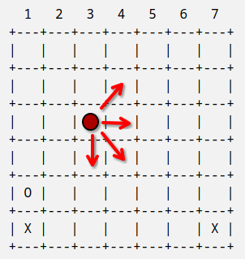

Connect 4 - Tutorial
O objetivo desse tutorial é mostrar como implementar o jogo Connect 4 usando a linguagem Python.
Crie usando seu editor preferido um arquivo chamado connect4.py.
Começamos definindo algumas constantes
NUMERO_DE_LINHAS = 6 NUMERO_DE_COLUNAS = 7
Representaremos as peças bem como a ausência delas por caracteres
X = 'X' O = 'O' VAZIO = ' '
O tabuleiro será uma matriz (lista de listas) formado inicialmente por peças vazias
def novo_tabuleiro(): tabuleiro = [] for i in range(NUMERO_DE_LINHAS): linha = [] for j in range(NUMERO_DE_COLUNAS): linha.append(VAZIO) tabuleiro.append(linha) return tabuleiro
Criamos uma função para exibir um tabuleiro no terminal
def mostra_tabuleiro(tabuleiro): for i in range(NUMERO_DE_COLUNAS): print(f" {i+1} ", end="") print() print("+" + NUMERO_DE_COLUNAS * "---+") for i in range(NUMERO_DE_LINHAS): print("|", end="") for j in range(NUMERO_DE_COLUNAS): print(f" {tabuleiro[i][j]} |", end="") print() print("+" + NUMERO_DE_COLUNAS * "---+")
Testemos essa função
tabuleiro = novo_tabuleiro()
mostra_tabuleiro(tabuleiro)
1 2 3 4 5 6 7 +---+---+---+---+---+---+---+ | | | | | | | | +---+---+---+---+---+---+---+ | | | | | | | | +---+---+---+---+---+---+---+ | | | | | | | | +---+---+---+---+---+---+---+ | | | | | | | | +---+---+---+---+---+---+---+ | | | | | | | | +---+---+---+---+---+---+---+ | | | | | | | | +---+---+---+---+---+---+---+
Agora precisamos de uma função para colocar uma peça no tabuleiro
def coloca_peca(tabuleiro, coluna, peca): coluna -= 1 for i in range(NUMERO_DE_LINHAS-1, 0, -1): if tabuleiro[i][coluna] == VAZIO: tabuleiro[i][coluna] = peca return True return False
Testemos novamente
tabuleiro = novo_tabuleiro() tabuleiro = novo_tabuleiro() coloca_peca(tabuleiro, 1, X) coloca_peca(tabuleiro, 1, O) coloca_peca(tabuleiro, 7, X) mostra_tabuleiro(tabuleiro)
1 2 3 4 5 6 7 +---+---+---+---+---+---+---+ | | | | | | | | +---+---+---+---+---+---+---+ | | | | | | | | +---+---+---+---+---+---+---+ | | | | | | | | +---+---+---+---+---+---+---+ | | | | | | | | +---+---+---+---+---+---+---+ | O | | | | | | | +---+---+---+---+---+---+---+ | X | | | | | | X | +---+---+---+---+---+---+---+
Para verificar se alguém venceu o jogo, percorremos todo o tabuleiro checando se existem quatro peças iguais e não vazias em uma das direções mostradas na figura a seguir

Cada direção e representada por um par de deslocamentos linha/coluna
DIRECOES = [ [0, 1], # direita [1, 0], # baixo [-1, 1], # cima-direita [1, 1] # baixo-direita ]
Por exemplo, quando nos deslocamos uma casa para a direita, a linha não sofre autereção enquanto a coluna aumenta em 1.
A seguir temos a função que verifica vitória. Tomamos cuidado também de verificar se a posição está dentro do tabuleiro
def verifica_vitoria(tabuleiro): for i in range(NUMERO_DE_LINHAS): for j in range(NUMERO_DE_COLUNAS): for di, dj in DIRECOES: ni, nj = i, j if tabuleiro[ni][nj] != VAZIO: contador = 1 while True: if contador == 4: return (i, j, di, dj) ni += di nj += dj if fora_do_tabuleiro(ni, nj) or tabuleiro[ni][nj] != tabuleiro[i][j]: break contador += 1 return False def fora_do_tabuleiro(linha, coluna): return linha < 0 or linha >= NUMERO_DE_LINHAS or coluna < 0 or coluna >= NUMERO_DE_COLUNAS
Haverá empate se não houver vitória e todas as casas do tabuleiro estiverem preenchidas (basta verificar a primeira linha do tabuleiro de cima para baixo)
def verifica_empate(tabuleiro): if verifica_vitoria(tabuleiro): return False for coluna in range(NUMERO_DE_COLUNAS): if tabuleiro[0][coluna] == VAZIO: return False return True
Agora só precisamos implementar a interface do nosso jogo que deverá
- Mostrar o título do jogo e algumas instruções
- Perguntar quem começa a jogar
- Criar um novo tabuleiro e iniciar o laço principal do jogo
No laço principal
- Mostramos o tabuleiro
- Recebemos uma jogada
- Se alguém venceu e se houve empate, informamos aos jogadores e encerramos o jogo
- Caso contrário passamos a vez para o próximo jogador
Segue a implementação
def recebe_jogador(): while True: print("Quem começa? [X|O]") resp = input("> ").upper() if resp == "X" or resp == "O": return resp print("Escolha inválida.") def recebe_jogada(tabuleiro, jogador_atual): while True: print("Escolha uma coluna.") resp = input(f"{jogador_atual}> ") if resp.isdigit() and len(resp) == 1 and resp >= "1" and resp <= "7": result = coloca_peca(tabuleiro, int(resp), jogador_atual) if result: return print("Jogada inválida!") def proximo_jogador(jogador_atual): if jogador_atual == X: return O return X def roda_jogo(): print("Connect 4 para dois jogadores.") tabuleiro = novo_tabuleiro() jogador_atual = recebe_jogador() while True: mostra_tabuleiro(tabuleiro) recebe_jogada(tabuleiro, jogador_atual) if verifica_vitoria(tabuleiro): mostra_tabuleiro(tabuleiro) print(f"Jogador {jogador_atual} venceu!") break if verifica_empate(tabuleiro): mostra_tabuleiro(tabuleiro) print(f"Empate.") break jogador_atual = proximo_jogador(jogador_atual) if __name__ == "__main__": roda_jogo()
Para jogar, basta ter o interpretador python devidamente instalado, abrir um terminal no mesmo diretório do jogo e digitar o comando
python connect4.py